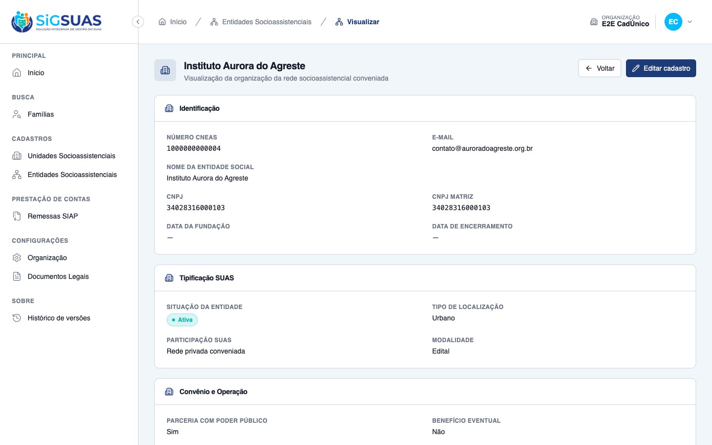
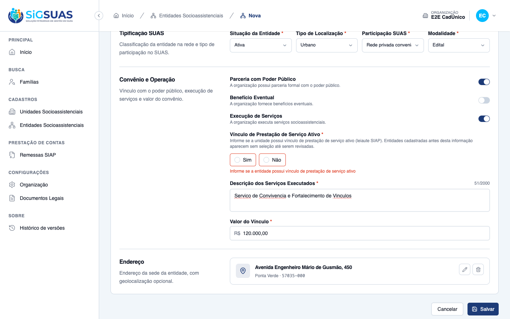
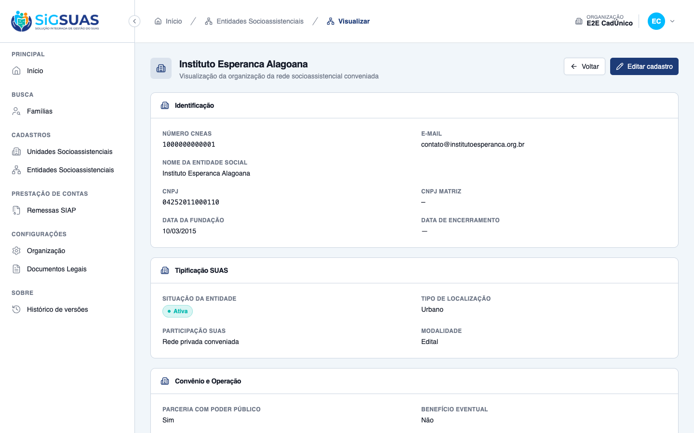
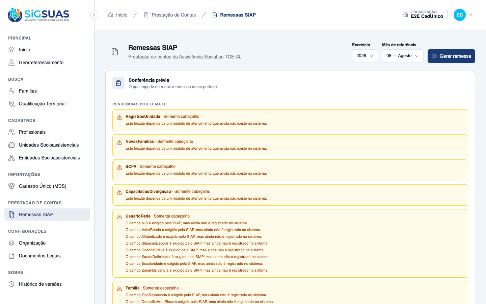
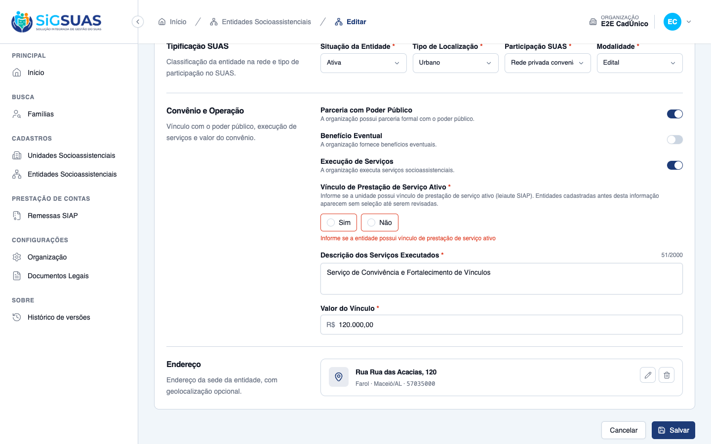
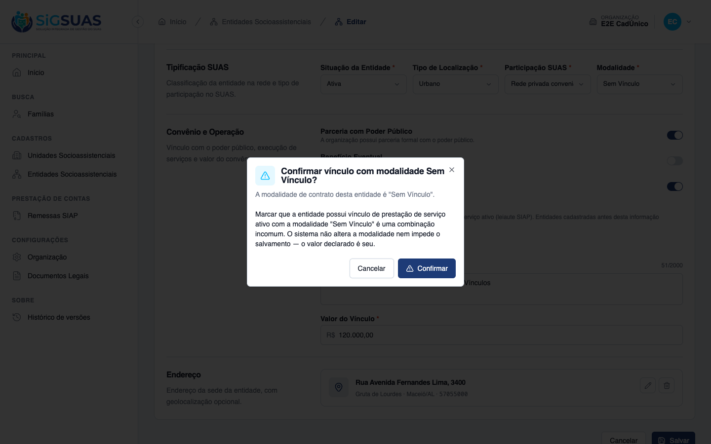
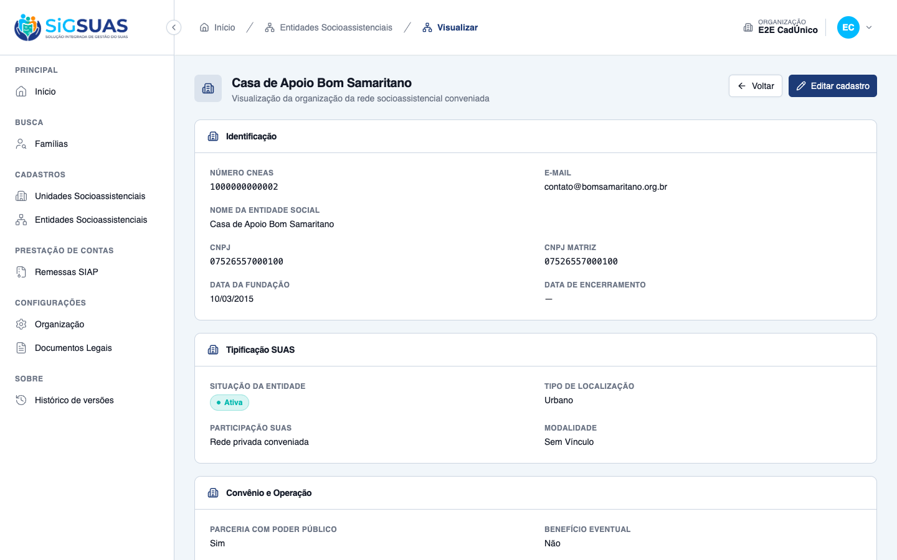
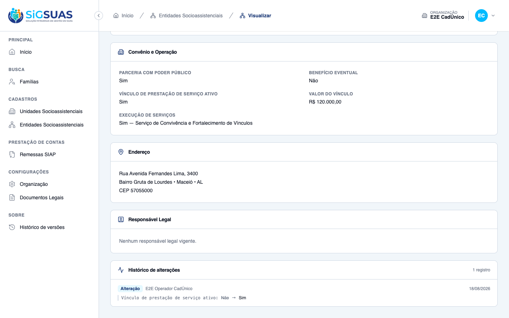
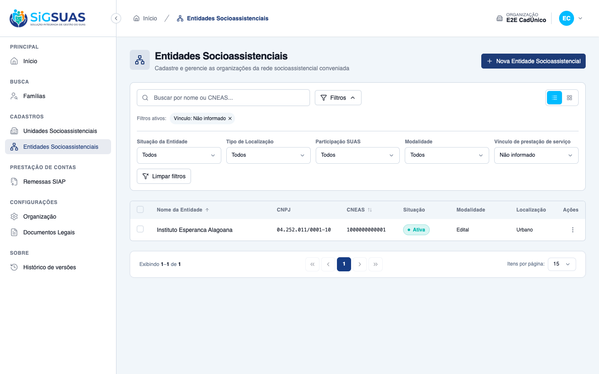

Relatório de Critérios de Aceite — HU #10369 (US-SIAP-08)
Resumo
10 critérios avaliados, 10 atendidos — nenhum reprovado. Esta é uma RECAPTURA INTEGRAL contra a branch staging, feita porque o dossiê anterior (12/08/2026) havia sido produzido antes de a HU irmã #10371 alterar o efeito da pendência de entidade incompleta. Naquela entrega, a pendência apenas reduzia a remessa; hoje ela BLOQUEIA a remessa inteira — que é justamente o que o CA04 deste ticket sempre pediu ("pendência impeditiva"). Nove critérios foram dirigidos no navegador, no app real do tenant (CA01–CA07, CA09 e CA10), somando 10 prints. O CA08 é o único sem print, por natureza do critério: sua evidência é o conteúdo do EntidadeSocial.xml, conferido dentro do teste automatizado. Suítes anexas: 141 testes (435 asserções) em --filter=SocialEntity e 277 testes (1448 asserções) em --filter=Siap, todas verdes.
| CA | Critério | Status |
|---|---|---|
| CA01 | Cadastrar entidade com o campo informado (happy path) | ATENDIDO · navegador + automatizado |
| CA02 | Bloqueio ao salvar sem informar o campo | ATENDIDO · navegador + automatizado |
| CA03 | Entidade antiga permanece sem valor até ser revisada | ATENDIDO · navegador + automatizado |
| CA04 | Entidade antiga sem valor bloqueia a remessa | ATENDIDO · navegador + automatizado |
| CA05 | Preencher o campo resolve a pendência | ATENDIDO · navegador + automatizado |
| CA06 | Edição exige o campo preenchido | ATENDIDO · navegador + automatizado |
| CA07 | Aviso de combinação incomum com a modalidade de contrato | ATENDIDO · navegador + automatizado |
| CA08 | Campo distinto da situação de funcionamento | ATENDIDO · automatizado |
| CA09 | Alteração auditada | ATENDIDO · navegador + automatizado |
| CA10 | Filtro na listagem | ATENDIDO · navegador + automatizado |
CA01 — Cadastrar entidade com o campo informado (happy path) ATENDIDO · navegador + automatizado
Critério (Gherkin): Dado que sou Operacional do Tenant e estou cadastrando uma entidade socioassistencial Quando eu preencher os dados e marcar que a entidade possui vínculo de prestação de serviço ativo Então a entidade é salva com esse valor E o valor aparece no detalhe da entidade
Como foi testado: No painel do tenant → Entidades Socioassistenciais → Nova Entidade Socioassistencial → preencher os dados, marcar Sim em Vínculo de Prestação de Serviço Ativo (grupo “Convênio e Operação”) → Salvar → abrir o detalhe da entidade criada.
- A entidade “Instituto Aurora do Agreste” é salva sem erro, o sistema exibe “Entidade cadastrada com sucesso!” e navega para a listagem.
- No card “Convênio e Operação” do detalhe, o campo VÍNCULO DE PRESTAÇÃO DE SERVIÇO ATIVO exibe “Sim”, ao lado dos demais indicadores (Parceria com Poder Público, Benefício Eventual, Execução de Serviços), como pede a RN01.
- Confirmação no banco: social_entities.has_active_service_agreement = true para essa entidade.
- Backend: “CA01: store persists has_active_service_agreement and returns it” e “CA01: store accepts false as an informed value” — “não” também é um valor informado, distinto de “não informado”.

CA02 — Bloqueio ao salvar sem informar o campo ATENDIDO · navegador + automatizado
Critério (Gherkin): Dado que estou cadastrando uma entidade socioassistencial Quando eu tentar salvar sem informar se ela possui vínculo de prestação de serviço ativo Então o cadastro não é salvo E o sistema indica que esse campo precisa ser informado, apontando o campo em falta
Como foi testado: Formulário de Nova Entidade Socioassistencial com todos os demais campos preenchidos e o RadioGroup de vínculo sem seleção → Salvar.
- O cadastro não é salvo e a página permanece no formulário (/app/entidades/novo).
- A mensagem aparece imediatamente abaixo do próprio campo, em vermelho: “Informe se a entidade possui vínculo de prestação de serviço ativo” — aponta o campo em falta, não uma mensagem genérica de formulário.
- O controle nasce sem seleção (nem “Sim” nem “Não” marcados): um Switch binário representaria automaticamente “não”, que é justamente o que a RN03 proíbe.
- O texto de apoio do campo explica a razão: “Informe se a unidade possui vínculo de prestação de serviço ativo (leiaute SIAP). Entidades cadastradas antes desta informação aparecem sem seleção até serem revisadas.”
- Backend: “CA02: store without has_active_service_agreement returns 422 with the pt-BR label” — a mensagem carrega o rótulo de negócio e NÃO o nome técnico da coluna; “CA02: store with explicit null is rejected” cobre o envio explícito de null.

CA03 — Entidade antiga permanece sem valor até ser revisada ATENDIDO · navegador + automatizado
Critério (Gherkin): Dado que a entidade "Instituto Esperança" foi cadastrada antes desta HU Quando eu abrir o detalhe dessa entidade Então o campo de vínculo de prestação de serviço está vazio E nenhum valor foi atribuído automaticamente pelo sistema
Como foi testado: Abrir o detalhe da entidade legada Instituto Esperanca Alagoana (gravada com o campo NULL, sem backfill) e observar o card “Convênio e Operação”.
- O campo VÍNCULO DE PRESTAÇÃO DE SERVIÇO ATIVO exibe “—” (vazio) — e não “Não”. A distinção é o coração da RN03: o sistema não declara ao Tribunal aquilo que o município não declarou.
- Os demais indicadores da mesma entidade seguem preenchidos (Parceria com Poder Público “Sim”, Benefício Eventual “Não”), o que mostra que o “—” é ausência de valor e não falha de renderização.
- Confirmação no banco: has_active_service_agreement IS NULL para essa entidade, após a migration ter sido aplicada.
- Backend: “CA03: legacy entity keeps a null agreement and is exposed as null”.
- Não existe backfill nem comando de preenchimento em massa: grep por has_active_service_agreement em database/seeders/ e app/Console/ não devolve nada.

CA04 — Entidade antiga sem valor bloqueia a remessa ATENDIDO · navegador + automatizado
Critério (Gherkin): Dado que a entidade "Instituto Esperança" está com o campo vazio Quando eu solicitar a conferência prévia de uma referência Então é apresentada pendência impeditiva no leiaute EntidadeSocial identificando essa entidade e o campo de vínculo de prestação de serviço
Como foi testado: Como Master, com os parâmetros TCE/AL do tenant já com o CARDUG 004821 informado, abrir Prestação de Contas → Remessas SIAP e observar a conferência prévia da referência 08/2026.
- A conferência prévia abre com o bloco “IMPEDIMENTOS QUE BLOQUEIAM TODA A REMESSA” em destaque, no topo, antes de qualquer pendência de leiaute.
- O impedimento traz o selo “Bloqueia os 11 arquivos” e identifica o registro e o campo: “Registro: Instituto Esperanca Alagoana · Campo: SituacaoUnidade”.
- A mensagem é acionável: “Esta entidade socioassistencial está sem SituacaoUnidade, exigido pelo SIAP. Corrija o cadastro da entidade: enquanto isso, nenhuma remessa pode ser gerada.” — com atalho “Abrir o cadastro da entidade”.
- O botão “Gerar remessa” aparece DESABILITADO: o bloqueio é efetivo, não apenas informativo.
- O bloco “PENDÊNCIAS POR LEIAUTE” aparece separado, abaixo, e a própria tela avisa que “Estas pendências serão reavaliadas depois que o impedimento acima for resolvido”.
- Conferência no serviço (SiapPreCheckService, referência 2026/08): ready = false; a única pendência bloqueante é { scope: 'blocking', kind: 'record_incomplete', fieldName: 'SituacaoUnidade', subjectType: 'social_entity', subjectUuid: '97e13d72-…' }; no leiaute EntidadeSocial, recordCount 2 e skippedCount 1.
- O efeito bloqueante vem da D04 da HU #10371 (SiapPendency::entityIncomplete → SCOPE_BLOCKING). Na entrega de 12/08 esta pendência ainda era de leiaute e apenas reduzia a remessa; o comportamento atual é o que este critério sempre pediu.
- A identificação do registro na API é feita só por subject_uuid — CNPJ, e-mail e endereço nunca entram na pendência (RN09/LGPD). O nome exibido na tela é acrescentado na resposta via withLabel(), decisão D02/D03 da #10530.

CA05 — Preencher o campo resolve a pendência ATENDIDO · navegador + automatizado
Critério (Gherkin): Dado que informei o valor do campo na entidade "Instituto Esperança" Quando eu solicitar a conferência prévia novamente Então aquela pendência não aparece mais
Como foi testado: Informar o vínculo na entidade legada Instituto Esperanca Alagoana pelo formulário de edição (perfil Operacional do Tenant, RN06), marcando Não; em seguida reabrir Prestação de Contas → Remessas SIAP na mesma referência 08/2026 como Master.
- O bloco “Impedimentos que bloqueiam toda a remessa” deixa de existir na tela.
- EntidadeSocial desaparece por completo das pendências: a lista passa a começar em RegistrosUnidade, e as demais pendências, alheias a esta HU (leiautes que dependem de módulos de atendimento ainda inexistentes), seguem intactas.
- O botão “Gerar remessa” volta a ficar HABILITADO.
- Conferência no serviço, mesma referência: ready = true, nenhuma pendência bloqueante, e o leiaute EntidadeSocial com recordCount 4, skippedCount 0 e nenhuma pendência — as quatro entidades do tenant passam a entrar no arquivo.
- O valor informado foi “Não” e a entidade continua com situação de funcionamento “Ativa”. A pendência sai porque o município declarou, não porque o vínculo existe (RN04).
- Confirmação no banco: has_active_service_agreement = false na entidade que antes estava NULL.
- Backend: “it drops the pendency as soon as the municipality informs the value (CA05)”; “it does not persist anything during the pre-check” garante que a conferência é derivada em tempo de leitura, sem pendência residual.

CA06 — Edição exige o campo preenchido ATENDIDO · navegador + automatizado
Critério (Gherkin): Dado que estou editando uma entidade antiga que está com o campo vazio Quando eu alterar qualquer outro dado e tentar salvar sem informar o vínculo de prestação de serviço Então a edição não é salva E o sistema indica que o campo precisa ser informado
Como foi testado: Abrir Editar na entidade legada Instituto Esperanca Alagoana, alterar o e-mail de contato e Salvar sem tocar no vínculo.
- A edição não é salva: a tela permanece no formulário de edição.
- O RadioGroup de vínculo continua sem seleção e recebe a mesma mensagem do CA02, abaixo do campo: “Informe se a entidade possui vínculo de prestação de serviço ativo”.
- Confirmação no banco de que NADA foi persistido: o e-mail continua o anterior (contato@institutoesperanca.org.br, e não o novo valor digitado) e has_active_service_agreement segue NULL.
- O comportamento decorre de o UpdateSocialEntityRequest usar ['required','boolean'] sem 'sometimes' — editar qualquer outro campo obriga a revisar o vínculo.
- Backend: “CA06: update without has_active_service_agreement returns 422 and does not save” e “CA06b: update with has_active_service_agreement saves the value”.

CA07 — Aviso de combinação incomum com a modalidade de contrato ATENDIDO · navegador + automatizado
Critério (Gherkin): Dado que estou editando uma entidade cuja modalidade de contrato é "Sem Vínculo" Quando eu marcar que ela possui vínculo de prestação de serviço ativo Então o sistema apresenta aviso pedindo confirmação da combinação E, ao confirmar, o valor é salvo como informei — o sistema não altera nem impede a combinação
Como foi testado: Editar a entidade Casa de Apoio Bom Samaritano (modalidade Sem Vínculo, código 001) e marcar Sim no vínculo de prestação de serviço; confirmar o diálogo e salvar.
- Ao marcar “Sim”, o sistema abre o diálogo “Confirmar vínculo com modalidade Sem Vínculo?”, com o texto: “Marcar que a entidade possui vínculo de prestação de serviço ativo com a modalidade ‘Sem Vínculo’ é uma combinação incomum. O sistema não altera a modalidade nem impede o salvamento — o valor declarado é seu.”
- O diálogo oferece Cancelar e Confirmar: é aviso, não bloqueio (RN05).
- Ao confirmar e salvar, o detalhe mostra MODALIDADE “Sem Vínculo” e VÍNCULO DE PRESTAÇÃO DE SERVIÇO ATIVO “Sim” convivendo — o sistema não derivou o valor da modalidade nem corrigiu nenhum dos dois.
- Confirmação no banco: has_active_service_agreement = true com a modalidade “Sem Vínculo” na mesma linha.
- Decisão de negócio provisória: o aviso foi marcado pelo PO como dúvida pendente e pode ser removido sem prejuízo para a remessa — nada na modelagem depende dele.


CA08 — Campo distinto da situação de funcionamento ATENDIDO · automatizado
Critério (Gherkin): Dado uma entidade com situação de funcionamento "Ativa" e sem vínculo de prestação de serviço ativo Quando eu salvar o cadastro Então os dois valores são registrados de forma independente E a remessa leva SituacaoEntidadeSocial=1 e SituacaoUnidade=2
Como foi testado: Natureza da evidência: verificado por teste automatizado, com conferência do XML gerado dentro do próprio teste (ver Anexo — pest-10369.txt); sem print de tela. Cobertura em tests/Feature/Api/SiapRemittanceGenerationTest.php e SocialEntityControllerTest.php.
- “it emits the service agreement and the operating status as independent values (CA08)” — o EntidadeSocial.xml da remessa gerada sai com SituacaoEntidadeSocial=1 (Ativa) e SituacaoUnidade=2 (não), na mesma linha e sem interferência de um valor no outro.
- “it emits the informed service agreement as SIM (CA08b)” — com o vínculo informado como “sim”, SituacaoUnidade=1, mantendo SituacaoEntidadeSocial=1.
- “CA08: social_entity_status_id and has_active_service_agreement are independent” — no cadastro, trocar o status não mexe no vínculo e vice-versa (RN04).
- A independência é estrutural: SituacaoEntidadeSocial vem de SiapDomainMap::socialEntityStatus(status.code) e SituacaoUnidade de SiapDomainMap::yesNo(has_active_service_agreement) — duas fontes distintas.
- Sem print de tela por natureza do critério: a evidência é o conteúdo do arquivo XML, não uma tela do sistema.
Evidência por cobertura automatizada — ver Anexo.
CA09 — Alteração auditada ATENDIDO · navegador + automatizado
Critério (Gherkin): Dado que alterei o valor do campo de "não" para "sim" em uma entidade Quando eu consultar a trilha de auditoria da entidade Então a alteração consta registrada, com o autor e a data
Como foi testado: Abrir o detalhe da entidade Casa de Apoio Bom Samaritano — cujo vínculo foi alterado de “Não” para “Sim” no CA07 — e observar o card Histórico de alterações.
- O card “Histórico de alterações” exibe “1 registro” com a entrada: rótulo <b>Alteração</b>, autor <b>E2E Operador CadÚnico</b> e data <b>18/08/2026</b>.
- A linha mostra o de→para do campo: “Vínculo de prestação de serviço ativo: Não → Sim”.
- Confirmação no banco: activity_log com log_name 'social_entity', event 'updated', causer_id 10 (o próprio Operacional que fez a alteração) e created_at da alteração; properties carrega o tenant_id, injetado pelo Model Activity customizado do projeto.
- Backend: “CA09: changing the agreement records an activity with causer and old/new values”; “CA09b: activity endpoint is forbidden without social-entities.view-activity”; “RN10: activity endpoint forbids entities from another tenant” — a trilha nunca cruza o tenant ativo.

CA10 — Filtro na listagem ATENDIDO · navegador + automatizado
Critério (Gherkin): Dado que existem entidades com o campo vazio na minha base Quando eu filtrar a listagem de entidades por vínculo de prestação de serviço não informado Então vejo apenas as entidades que ainda precisam ser revisadas
Como foi testado: Listagem de Entidades Socioassistenciais → Filtros → Vínculo de prestação de serviço = Não informado. Captura feita ANTES do CA05, quando a legada ainda estava sem valor.
- A listagem passa a exibir apenas “Instituto Esperanca Alagoana”, a única entidade da base com o campo vazio — as demais, que têm valor informado (sim ou não), saem do resultado.
- O filtro aparece como chip removível em “Filtros ativos: Vínculo: Não informado”, ao lado do botão Limpar filtros.
- O filtro oferece os três estados: “Possui vínculo ativo”, “Não possui vínculo ativo” e “Não informado” — o terceiro estado é o que permite fechar a base antes da primeira remessa.
- O terceiro estado funciona porque o backend usa AllowedFilter::callback com whereNull: AllowedFilter::exact não alcança NULL, já que where(col, null) nunca casa em SQL.
- Backend: “CA10: filters the listing by the three agreement states”, “CA10: an unknown filter value is ignored instead of erroring” e “RN10: the agreement filter never crosses the active tenant”.
- Decisão de negócio provisória: o filtro também estava marcado pelo PO como dúvida pendente e pode ser removido sem prejuízo para a remessa.

Observações e ressalvas
Por que esta recaptura existe — o CA04 mudou de comportamento depois da entrega original
O dossiê anterior desta HU foi produzido em 12/08/2026, sobre a branch da própria feature. Naquele momento, a pendência da entidade sem vínculo informado era de leiaute: ela retirava a entidade do arquivo, mas não impedia a geração da remessa — o dossiê registrava isso explicitamente, com blocks_entire_remittance: false e o botão “Gerar remessa” habilitado.
Depois daquela captura, a HU irmã #10371 (decisão D04) promoveu a pendência de entidade incompleta a bloqueante. Hoje, na branch staging, a ausência do vínculo impede toda a remessa — que é exatamente o que o CA04 deste ticket sempre pediu (“pendência impeditiva”). O dossiê antigo, portanto, havia se tornado incompatível com o próprio critério que documentava.
Esta recaptura foi feita integralmente contra a staging (api 22fa09a · client c45b2ad), e não sobre a branch da feature, para que a evidência corresponda ao código que segue para produção.
Defeito encontrado e corrigido durante a captura (correção em branch própria)
Ao tentar exercitar os critérios que passam pelo formulário de edição da entidade (CA05, CA06, CA07 e CA09), constatou-se que a tela de edição estava inacessível para todos os perfis:
- O Operacional tem
social-entities.updatee passava no guard de rota, mas a página montava o bloco de responsável legal, que dispara uma requisição exigindosocial-entities.manage-representatives— permissão Master-only por decisão da HU #9132. O 403 resultante era convertido pelo interceptor global do HTTP em desvio para a página/403, derrubando a tela inteira. - O Master tem a permissão de responsável legal, mas não tem
social-entities.update, então era barrado antes, no próprio guard de rota.
Resultado prático: ninguém conseguia editar uma entidade socioassistencial. Como a HU #10369 torna o vínculo obrigatório também na edição (RN02), o defeito inviabilizava a própria regra que ela institui.
A correção aplicada foi mínima e no escopo do problema: o bloco de responsável legal passou a ser condicionado à permissão que o backend já exige. Ela está commitada em branch própria do frontend do tenant (fix/edicao-entidade-bloco-responsavel-legal), acompanhada de três testes de regressão, e passou por lint, verificação de tipos e a suíte completa (188 arquivos, 1484 testes, todos verdes). Ela conserta um defeito preexistente, não faz parte do escopo original desta HU e depende de revisão e incorporação à branch de integração — enquanto não for incorporada, os critérios que passam pela tela de edição (CA05, CA06, CA07 e CA09) não são reproduzíveis por quem não estiver com essa branch.
Cobertura visual — o que este dossiê demonstra na tela
Para não deixar dúvida sobre o que é evidência de tela e o que é evidência de teste:
- Com print de tela (10 arquivos em
screenshots/): CA01, CA02, CA03, CA04, CA05, CA06, CA07 (dois prints), CA09 e CA10. - Sem print de tela: apenas o CA08, por natureza do critério — o que ele afirma é o conteúdo de duas tags do
EntidadeSocial.xml, conferido dentro do teste automatizado. Não existe tela do sistema que mostre isso.
Os prints do CA04 e do CA05 foram capturados em sequência sobre a mesma referência (08/2026) e a mesma entidade: primeiro com o campo vazio (remessa bloqueada), depois com o valor informado (remessa liberada). O CA09 usa a entidade cujo vínculo foi alterado no CA07, de modo que a trilha exibida é a daquela mesma alteração. O CA10 foi capturado antes do CA05, quando a entidade legada ainda era a única sem valor na base.
Achado de ambiente — a distribuição de permissões do perfil Master no cadastro de entidades
Na configuração de papéis vigente, o perfil master possui social-entities.index, .show e .manage-representatives, mas não possui social-entities.store nem .update, que estão no operador. Por isso todas as evidências de cadastro e edição foram dirigidas como Operacional do Tenant, e as do painel de remessa como Master, que é quem tem siap-remittances.store.
Isso não contraria a RN06 — que diz que informar o vínculo não é ação Master-only e segue a permissão de edição de entidades —, mas mostra que a leitura de negócio de que “Master e Operacional já possuem” a permissão de edição não corresponde ao que o PermissionRegistry distribui hoje. É configuração anterior a esta HU e nenhum código foi alterado por causa disso; fica registrado para decisão do PO.
Massa de evidência e dimensionamento em produção
A base usada nesta recaptura foi montada para o exercício dos critérios e contém 4 entidades no tenant E2E CadÚnico. Ela não é representativa de nenhum município: não há relação entre esse volume e o que um município real terá.
O dimensionamento da revisão — quantas entidades cada município precisará revisar antes da primeira remessa — depende de rodar, em staging ou produção, a consulta que conta as entidades com has_active_service_agreement IS NULL por tenant. Essa medição continua pendente e é o que responde à pergunta do PO sobre o esforço de mutirão. Na tela, o mesmo recorte é obtido pelo filtro “Não informado” do CA10.
Anexo — Cobertura automatizada (Pest 4 — php artisan test --filter=SocialEntity e --filter=Siap)
=== php artisan test --filter=SocialEntity ===
PASS Tests\Unit\Models\SocialEntityLegalRepresentativeTest
✓ it has correct fillable attributes 0.10s
✓ it uses HasUuid trait
✓ it uses LogsActivity trait
✓ it uses SoftDeletes trait
✓ it uses BelongsToTenant trait
✓ it has correct route key name (uuid)
✓ it has correct casts 0.01s
✓ it has socialEntity BelongsTo relationship 0.01s
✓ it has person BelongsTo relationship
✓ it has tenant BelongsTo relationship
✓ it uses correct log name
✓ it logs only the expected attributes
PASS Tests\Unit\Models\SocialEntityStatusTest
✓ it has correct fillable attributes 0.02s
✓ it defaults is_active to true
✓ it casts is_active to boolean
✓ it uses soft deletes
✓ it uses HasUuid trait
PASS Tests\Unit\Models\SocialEntityTest
✓ it has correct fillable attributes
✓ it uses soft deletes
✓ it uses HasUuid trait
✓ it uses BelongsToTenant trait
✓ it has correct casts
✓ it casts has_active_service_agreement as boolean preserving null
✓ it has tenant relationship
✓ it has address relationship
✓ it has socialEntityStatus relationship
✓ it has locationType relationship
✓ it has suasParticipationType relationship
✓ it has contractModality relationship
✓ it uses LogsActivity trait
✓ it has statusHistory morph many relation
✓ it logs activity only on tracked attributes
✓ it has legalRepresentatives HasMany relationship
✓ it has currentLegalRepresentative HasOne relationship
PASS Tests\Feature\Api\Relationals\SocialEntityStatusControllerTest
✓ it lists only active social entity statuses 0.93s
✓ it returns up to 30 statuses and flags searchable above the thresho… 0.03s
✓ it exposes only id, name and code 0.02s
✓ it filters by search on name (case-insensitive) 0.09s
✓ it filters by search on code 0.02s
✓ it rejects unauthenticated request with 401 0.02s
✓ it rejects search shorter than 2 characters 0.03s
✓ it accepts requests from the client guard 0.02s
✓ it caches the active status set 0.04s
✓ it invalidates the cache when a status is created 0.02s
✓ it invalidates the cache on bulk deactivate 0.09s
✓ it drops a status from the cached set when it becomes inactive 0.02s
PASS Tests\Feature\Api\SocialEntityControllerTest
✓ it lists social entities for tenant 0.12s
✓ it creates a social entity 0.08s
✓ it creates the address tenant-bound atomically and links it to the… 0.04s
✓ it captures the geolocation POINT when geometry is sent in the addr… 0.04s
✓ it sanitizes cnpj/head_office_cnpj via str_numbers on store 0.04s
✓ it rejects the embedded address when required sub-fields are missin… 0.04s
✓ it shows a social entity with relationships 0.03s
✓ it shows the current legal representative with its person 0.04s
✓ it updates a social entity 0.04s
✓ it updates the linked address in place when the address block is se… 0.04s
✓ it deletes a social entity 0.05s
✓ it validates required fields 0.05s
✓ it bulkDestroy soft-deleta várias entidades do tenant ativo 0.04s
✓ it bulkDestroy rejeita uuids de outros tenants (defesa em profundid… 0.03s
✓ it bulkDestroy é barrado sem a permissão social-entities.bulk-destr… 0.04s
✓ it bulkChangeStatus aplica social_entity_status_id e separa changed… 0.04s
✓ it bulkChangeStatus exige social_entity_status_id no payload 0.03s
✓ it bulkChangeStatus é barrado sem a permissão social-entities.bulk-… 0.03s
✓ it requires X-Tenant-UUID header 0.04s
✓ it requires authentication 0.02s
✓ it isolates tenant data 0.03s
✓ it filters by legal_name 0.03s
✓ it sorts by legal_name 0.03s
✓ it includes socialEntityStatus when requested 0.03s
✓ it changes status of a social entity via dedicated endpoint 0.04s
✓ it does not record activity when status does not change 0.03s
✓ it returns paginated status history of a social entity 0.04s
✓ it validates social_entity_status_id existence on changeStatus 0.03s
✓ it forbids changeStatus when entity belongs to a different tenant 0.03s
✓ it forbids viewing status history of entity from another tenant 0.03s
✓ it CA02: store requires all mandatory SIAP layout fields with ('cne… 0.03s
✓ it CA02: store requires all mandatory SIAP layout fields with ('leg… 0.03s
✓ it CA02: store requires all mandatory SIAP layout fields with ('cnp… 0.03s
✓ it CA02: store requires all mandatory SIAP layout fields with ('hea… 0.04s
✓ it CA02: store requires all mandatory SIAP layout fields with ('ema… 0.03s
✓ it CA02: store requires all mandatory SIAP layout fields with ('add… 0.03s
✓ it CA02: store requires all mandatory SIAP layout fields with ('soc… 0.03s
✓ it CA02: store requires all mandatory SIAP layout fields with ('loc… 0.03s
✓ it CA02: store requires all mandatory SIAP layout fields with ('sua… 0.03s
✓ it CA02: store requires all mandatory SIAP layout fields with ('con… 0.03s
✓ it CA02: store requires all mandatory SIAP layout fields with ('has… 0.04s
✓ it CA02: store requires all mandatory SIAP layout fields with ('pro… 0.03s
✓ it CA02: store requires all mandatory SIAP layout fields with ('exe… 0.03s
✓ it CA02: store requires all mandatory SIAP layout fields with ('has… 0.03s
✓ it CA02: store requires all mandatory SIAP layout fields with ('con… 0.03s
✓ it CA02: store rejects invalid cnpj digit verifier 0.03s
✓ it CA02: store rejects invalid head_office_cnpj digit verifier 0.03s
✓ it CA02: executed_services_description required when executes_servi… 0.04s
✓ it CA05: store returns success message and persists entity 0.04s
✓ it CA06: store with duplicate active CNPJ returns 422 and existing_… 0.03s
✓ it CA06: soft-deleted entity with same CNPJ does not block new stor… 0.04s
✓ it RN06: store with duplicate active CNEAS returns 422 0.04s
✓ it RN06: rejected store (duplicate CNEAS) leaves no orphan address 0.04s
✓ it tenant isolation: show entity from another tenant returns 403 or… 0.04s
✓ it tenant isolation: update entity from another tenant returns 403 0.03s
✓ it tenant isolation: destroy entity from another tenant returns 403 0.03s
✓ it CA01: store persists has_active_service_agreement and returns it… 0.04s
✓ it CA01: store accepts false as an informed value 0.04s
✓ it CA02: store without has_active_service_agreement returns 422 wit… 0.04s
✓ it CA02: store with explicit null is rejected 0.04s
✓ it CA03: legacy entity keeps a null agreement and is exposed as nul… 0.03s
✓ it CA06: update without has_active_service_agreement returns 422 an… 0.03s
✓ it CA06b: update with has_active_service_agreement saves the value 0.04s
✓ it CA08: social_entity_status_id and has_active_service_agreement a… 0.05s
✓ it CA09: changing the agreement records an activity with causer and… 0.04s
✓ it CA09b: activity endpoint is forbidden without social-entities.vi… 0.04s
✓ it RN10: activity endpoint forbids entities from another tenant 0.03s
✓ it CA10: filters the listing by the three agreement states 0.05s
✓ it CA10: an unknown filter value is ignored instead of erroring 0.04s
✓ it RN10: the agreement filter never crosses the active tenant 0.04s
PASS Tests\Feature\Api\SocialEntityLegalRepresentativeControllerTest
✓ it CA03: store reuses existing Person by CPF 0.08s
✓ it CA03: store creates new Person when CPF does not exist 0.04s
✓ it CA03: store creates representative with is_current true 0.03s
✓ it RN08: store of new representative closes current one 0.03s
✓ it index returns representative history ordered by start_date desc 0.04s
✓ it destroy closes representative without soft deleting 0.03s
✓ it tenant isolation: index on entity from another tenant returns 40… 0.05s
✓ it tenant isolation: store on entity from another tenant returns 40… 0.05s
PASS Tests\Feature\Api\SocialEntityStatusControllerTest
✓ it lists social entity statuses 0.03s
✓ it creates a social entity status 0.03s
✓ it shows a social entity status 0.02s
✓ it updates a social entity status 0.04s
✓ it deletes a social entity status 0.02s
✓ it validates required fields on create 0.02s
✓ it requires authentication 0.02s
✓ it filters social entity statuses by name 0.02s
✓ it sorts social entity statuses by code 0.03s
✓ it exposes is_active and defaults to true on create 0.02s
✓ it filters social entity statuses by is_active 0.03s
✓ it bulk activates social entity statuses 0.03s
✓ it bulk deactivates social entity statuses 0.03s
✓ it forbids bulk activate without the bulk-update permission 0.03s
✓ it validates uuids on bulk activate 0.03s
✓ it rejects integer ids on bulk activate 0.02s
PASS Tests\Feature\TenantIsolation\CrossTenantControllerAuditTest
✓ it SocialEntityController nega acesso cross-tenant em show 0.03s
Tests: 141 passed (435 assertions)
Duration: 6.58s
=== php artisan test --filter=Siap ===
PASS Tests\Unit\Services\Siap\SiapDomainMapTest
✓ it inverts Parda and Amarela between the eSUAS and SIAP scales 0.01s
✓ it keeps the race colors that coincide in both scales
✓ it returns null for a race color without counterpart
✓ it maps social unit types to the SIAP classification
✓ it refuses to translate a unit status the SIAP does not define
✓ it derives the extinction status from the end date against the exer… 0.02s
✓ it lets the derivation win over the code chosen in the lookup (D04)
✓ it turns an extinct unit without a usable end date into a pendency (D05)
✓ it ignores the end date for statuses that are not extinction
✓ it only translates the entity status that has a safe counterpart
✓ it translates the paralysed entity added by the HU #10371 (CA05d)
✓ it derives the entity extinction status from the end date against the exercise (RN08)
✓ it turns an extinct entity without a usable end date into a pendency (D08)
✓ it keeps the four original cadastral statuses out of the SIAP scale (CA05e / D03)
✓ it ignores the end date for the entity in activity
✓ it collapses the four SUAS participation types into the three of SIAP
✓ it maps the contract modality to the SIAP scale (HU #10369 / D06)
✓ it refuses to translate a contract modality outside the SIAP scale
✓ it maps kinship to the family position scale
✓ it leaves the ambiguous education level unmapped
✓ it maps booleans to the SIM/NAO pair
✓ it strips the zero padding only for the auxiliary tables
✓ it maps the 14 equipment types of the SIAP Table 35 (RN04)
✓ it refuses an equipment code outside the SIAP Table 35 (RN04)
✓ it keeps paddedCode permissive where unitEquipment is strict (D09)
✓ it maps the 21 structures of the SIAP Table 36 (RN04)
✓ it refuses a structure code outside the SIAP Table 36 (RN04)
✓ it keeps paddedCode permissive where unitStructure is strict (D04)
✓ it refuses a numeric value with a size different from the exact one
✓ it never sanitizes a non numeric value to make it fit
✓ it flags truncation instead of cutting text in silence
✓ it formats dates in ISO and decimals with two places
✓ it registers exactly the 11 layouts of the SIAP social assistance section
✓ it puts UnidadeSocial first, since 8 other layouts depend on it
✓ it names every file after its layout, as the Manual requires
PASS Tests\Unit\Siap\SiapDownloadFileNameTest
✓ it keeps only the last path segment, killing the traversal (CA13) 0.16s
✓ it never lets CR, LF or other control characters survive (CA13) 0.02s
✓ it transliterates unicode and applies the allowlist 0.02s
✓ it keeps names that are already clean untouched 0.01s
✓ it forces exactly one .zip extension 0.02s
✓ it falls back to the suggested name when nothing usable remains (CA… 0.02s
✓ it falls back to the suggested name when nothing usable remains (CA… 0.02s
✓ it falls back to the suggested name when nothing usable remains (CA… 0.02s
✓ it falls back to the suggested name when nothing usable remains (CA… 0.01s
✓ it falls back to the suggested name when nothing usable remains (CA… 0.01s
✓ it falls back to the suggested name when nothing usable remains (CA… 0.02s
✓ it never returns an empty name, even against a hostile fallback 0.02s
✓ it caps the file name at 120 characters, extension included (CA13b) 0.02s
✓ it builds the suggestion from municipality, exercise and month 0.02s
✓ it falls back to the stored file name when the tenant has no usable… 0.02s
✓ it still suggests a name when there is no stored file yet 0.02s
PASS Tests\Unit\Siap\SiapSubjectLabelResolverTest
✓ it resolves the three tenant subject types in one query each (R2) 0.43s
✓ it dedupes repeated subject uuids before querying 0.02s
✓ it ignores an unknown subject type without breaking 0.02s
✓ it leaves an orphan uuid out of the map instead of failing 0.02s
✓ it leaves a soft deleted record out of the map 0.03s
✓ it never resolves a label that belongs to another tenant (CA09) 0.02s
PASS Tests\Feature\Api\SiapRemittanceGenerationTest
✓ it refuses the generation when the identifier is missing (CA06) 0.13s
✓ it refuses the generation for a legacy identifier outside the TCE-A… 0.03s
✓ it creates the remittance and dispatches the job when the identifie… 0.05s
✓ it generates a zip with all 11 layouts, including the ones without… 0.11s
✓ it emits the service agreement and the operating status as independ… 0.07s
✓ it emits the informed service agreement as SIM (CA08b) 0.07s
✓ it refuses the generation when the service agreement was never info… 0.04s
✓ it emits the unit address in the Manual order, with street number a… 0.07s
✓ it brings every unit of the municipality with the seven fields of t… 0.08s
✓ it keeps the paralysed unit inside the remittance (CA02) 0.06s
✓ it emits the unit extinct within the reference exercise as 3 (CA03) 0.08s
✓ it emits the unit extinct in a previous exercise as 4 (CA04) 0.06s
✓ it lets the end date override the status code chosen in the lookup… 0.07s
✓ it turns the extinct unit without a usable end date into a blocking… 0.04s
✓ it blocks the remittance while an inactive unit has no SIAP counter… 0.04s
✓ it translates the unit classification to the SIAP domain (CA05) 0.07s
✓ it suppresses the reference point first and keeps the complement (C… 0.07s
✓ it also suppresses the complement when the reference point is not e… 0.07s
✓ it never lets the address exceed 255 characters, not even in the wo… 0.07s
✓ it delivers the layout with the header only when there is no unit (… 0.06s
✓ it contains exclusively the units of my municipality (CA11) 0.07s
✓ it leaves the soft-deleted unit out of the remittance 0.08s
✓ it records the layout outcome of a layout without movement 0.06s
✓ it re-evaluates the block inside the job (TOCTOU) 0.04s
✓ it refuses the generation when a unit has no MDS number (CA07) 0.04s
✓ it refuses the generation when the unit classification is outside t… 0.04s
✓ it refuses the generation when the unit address has no postal code… 0.04s
✓ it counts municipalities, not fields: one unit missing two values i… 0.03s
✓ it keeps the unit block with its own message alongside the new enti… 0.03s
✓ it re-evaluates the unit block inside the job (D07/TOCTOU) 0.07s
✓ it refuses a second generation while one is still running 0.05s
✓ it never lists or downloads a remittance from another tenant 0.04s
✓ it refuses the download while the remittance is not completed 0.03s
✓ it brings every entity of the municipality with the seventeen field… 0.10s
✓ it keeps the entity without foundation date and head office CNPJ in… 0.08s
✓ it emits the declared service agreement regardless of the contract… 0.07s
✓ it emits the yes or no indicators as 1 and 2 (CA04) 0.07s
✓ it emits the entity extinct within the reference exercise as 3 (CA0… 0.07s
✓ it emits the entity extinct in a previous exercise as 4 (CA05b) 0.07s
✓ it turns the extinct entity without a usable end date into a blocki… 0.05s
✓ it emits the paralysed entity as 2 (CA05d) 0.06s
✓ it keeps the cadastral statuses without a SIAP counterpart as block… 0.05s
✓ it emits the contract amount with two decimal places and a dot sepa… 0.09s
✓ it delivers the entity layout with the header only when there is no… 0.06s
✓ it contains exclusively the entities of my municipality (CA11) 0.07s
✓ it keeps the soft deleted entity out of the file (RN01 — regressão) 0.07s
✓ it emits the entity address in the Manual order, ending with the mu… 0.07s
✓ it suppresses the entity reference point first and keeps the comple… 0.07s
✓ it also suppresses the entity complement when the reference point i… 0.07s
✓ it never lets the entity address exceed 255 characters, not even in… 0.07s
✓ it refuses the generation when an entity has no CNEAS number (CA06) 0.09s
✓ it refuses the generation when an entity has no e-mail (CA07) 0.13s
✓ it refuses the generation when an entity has no contract amount (CA… 0.09s
✓ it does not block the remittance when the contract amount is zero (… 0.10s
✓ it counts entities, not fields: one entity missing two values is on… 0.03s
✓ it evaluates the CARDUG before the entity records 0.05s
✓ it re-evaluates the entity block inside the job (TOCTOU) 0.05s
✓ it generates the remittance when every entity and unit is complete 0.10s
✓ it never carries the entity name, CNPJ or e-mail into the entity bl… 0.05s
✓ it brings the inventory of every unit into the layout (CA01) 0.09s
✓ it consolidates distinct purchases of the same equipment into one r… 0.08s
✓ it emits the equipment without a purchase date and reports nothing… 0.07s
✓ it keeps the only informed purchase date after consolidating (CA04) 0.11s
✓ it keeps the row in the file when the in-use quantity exceeds the t… 0.09s
✓ it omits the equipment with zero total quantity, without any penden… 0.08s
✓ it omits the zeroed row but still reports the contradiction (CA07b) 0.08s
✓ it reports nothing for a unit without any equipment (CA08) 0.08s
✓ it delivers the layout with header only when no unit has equipment… 0.07s
✓ it contains exclusively the equipment of my municipality (CA10) 0.08s
✓ it keeps emitting an equipment type that was deactivated in the glo… 0.07s
✓ it refuses the generation when an equipment code is outside Table 3… 0.04s
✓ it refuses the generation for a non numeric equipment code (CA05b) 0.05s
✓ it points the equipment refusal to the Global Administration Panel… 0.03s
✓ it counts equipment codes, not links: the same code in two units is… 0.03s
✓ it does not block a municipality for an invalid code it does not us… 0.08s
✓ it keeps the inventory contradiction informative after the block (D… 0.07s
✓ it re-evaluates the equipment block inside the job (TOCTOU) 0.05s
✓ it evaluates the CARDUG, the unit and the entity before the equipme… 0.05s
✓ it keeps the unit and entity blocks with their own messages (não-re… 0.05s
✓ it generates the remittance when every equipment code is inside Tab… 0.08s
✓ it brings every structure of every unit into the layout (CA01) 0.10s
✓ it refuses the generation when a structure code is outside Table 36… 0.04s
✓ it refuses the generation when a structure code is outside Table 36… 0.04s
✓ it refuses the generation when a structure code is outside Table 36… 0.04s
✓ it refuses the generation for a non numeric structure code (CA02b) 0.04s
✓ it never drops a linked structure in silence anymore (RN04d) 0.03s
✓ it offers the two ways out in the structure refusal (CA03c) 0.04s
✓ it counts structure codes, not links: the same code in two units is… 0.03s
✓ it keeps emitting a structure whose lookup item was deactivated (CA… 0.07s
✓ it does not filter out a school-profile structure (CA03b) 0.10s
✓ it reports nothing for a unit without any structure (CA04) 0.19s
✓ it delivers the layout with header only when no unit has a structur… 0.11s
✓ it contains exclusively the structures of my municipality (CA06) 0.07s
✓ it does not block a municipality for a structure code it does not u… 0.08s
✓ it re-evaluates the structure block inside the job (TOCTOU) 0.05s
✓ it evaluates the professional block last, after the structure one 0.06s
✓ it generates the remittance when every structure code is inside Tab… 0.08s
✓ it brings every professional assigned in the reference month into t… 0.09s
✓ it emits one line per unit for a professional assigned to two units… 0.08s
✓ it includes assignments that started or ended in the middle of the… 0.08s
✓ it leaves out assignments that ended before or started after the mo… 0.08s
✓ it keeps a professional inactivated after the reference month in th… 0.08s
✓ it leaves a soft deleted professional out of the layout without a p… 0.12s
✓ it reports nothing for a professional without any assignment (CA07) 0.08s
✓ it delivers the layout with header only when nobody is assigned (CA… 0.07s
✓ it contains exclusively the professionals of my municipality (CA11) 0.08s
✓ it emits the registration number as is and never sanitizes it (D05) 0.07s
✓ it refuses the generation when an assigned professional has no regi… 0.05s
✓ it refuses a malformed registration number without transforming it… 0.04s
✓ it refuses a malformed registration number without transforming it… 0.04s
✓ it refuses the generation when the assigned professional has no usa… 0.05s
✓ it refuses the generation when the assigned professional has no usa… 0.05s
✓ it counts assignments, not pendencies, in the professional refusal 0.04s
✓ it re-evaluates the professional block inside the job (TOCTOU) 0.05s
✓ it refuses reference months outside 1 to 12 (CA08/D03) with dataset… 0.03s
✓ it refuses reference months outside 1 to 12 (CA08/D03) with dataset… 0.03s
✓ it refuses reference months outside 1 to 12 (CA08/D03) with dataset… 0.03s
✓ it says the remittance only accepts months 1 to 12 (CA08b) 0.03s
✓ it still accepts month 12, the last valid one (CA08/D03) 0.03s
✓ it also refuses month 13 in the pre-check (R4) 0.03s
✓ it lets the tenant Operacional list, open and download — never gene… 1.52s
✓ it downloads with the suggested name by default and honours the cho… 0.06s
✓ it exposes the suggested file name in the resource (RN09) 0.04s
✓ it neutralises path traversal in the download name (CA13) 0.04s
✓ it never lets CRLF reach the Content-Disposition header (CA13) 0.04s
✓ it falls back to the suggested name when the chosen one is unusable… 0.04s
✓ it falls back to the suggested name when the chosen one is unusable… 0.04s
✓ it caps an oversized chosen name instead of failing (CA13b) 0.03s
✓ it ignores a non-string file_name instead of failing (CA13b) 0.04s
PASS Tests\Feature\Api\SiapRemittancePreCheckTest
✓ it separates the blocking identifier pendency from the per-layout o… 0.07s
✓ it states that the identifier pendency blocks the entire remittance… 0.03s
✓ it still lists every layout while the remittance is blocked (CA06) 0.03s
✓ it marks per-layout pendencies as non blocking 0.03s
✓ it reports a required field that has no source in the system 0.03s
✓ it does not persist anything during the pre-check 0.03s
✓ it releases the generation when the identifier is valid 0.03s
✓ it counts records only from the active tenant 0.03s
✓ it names the entity whose service agreement was never informed (CA0… 0.04s
✓ it shows the incomplete entity pendency in the blocking zone AND in… 0.04s
✓ it counts the promoted entity pendency only once (CA12b) 0.03s
✓ it keeps record_incomplete and domain_unmapped apart after the prom… 0.04s
✓ it carries the entity legal name as subject_label but never the CNP… 0.04s
✓ it drops the pendency as soon as the municipality informs the value… 0.04s
✓ it turns a contract modality outside the SIAP scale into a pendency… 0.04s
✓ it stops reporting EntidadeSocial as a layout without data source 0.04s
✓ it shows the incomplete unit pendency in the blocking zone AND in t… 0.03s
✓ it counts the promoted pendency only once (D08b) 0.03s
✓ it sends the unmapped unit classification to the Global Panel (CA08… 0.05s
✓ it names the unit without postal code by subject_label, never by ad… 0.04s
✓ it keeps the CARDUG pendency blocking alongside the unit ones (não-… 0.03s
✓ it releases the pre-check as soon as every unit is complete (happy… 0.04s
✓ it rejects an invalid reference month 0.03s
✓ it refuses the accounting references 13 and 14 since D03 (HU #10531… 0.03s
✓ it refuses the accounting references 13 and 14 since D03 (HU #10531… 0.04s
✓ it reports the inventory contradiction without blocking the generat… 0.04s
✓ it evaluates the contradiction over the consolidated value, not per… 0.04s
✓ it emits one informative pendency per consolidated pair, not per pu… 0.04s
✓ it does not turn the layout partial because of an informative pende… 0.04s
✓ it counts the informative pendency apart from the blocking and layo… 0.04s
✓ it still marks the layout partial for a pendency that removes a rec… 0.04s
✓ it shows the equipment code pendency in the blocking zone AND in th… 0.04s
✓ it blocks the pre-check for a non numeric equipment code as well (C… 0.04s
✓ it names the offending code and the Global Panel in the equipment p… 0.04s
✓ it counts the promoted equipment pendency only once 0.03s
✓ it keeps the informative pendency out of the blocking zone (D05) 0.04s
✓ it still releases the generation when only the inventory is contrad… 0.04s
✓ it shows the structure code pendency in the blocking zone AND in th… 0.04s
✓ it blocks the pre-check for a non numeric structure code as well (C… 0.04s
✓ it offers the two ways out in the structure pendency (CA03c) 0.04s
✓ it points the structure block to the global support register (CA08) 0.04s
✓ it does not raise a pendency for an unlinked structure outside Tabl… 0.04s
✓ it counts the promoted structure pendency only once (CA07) 0.03s
✓ it keeps the equipment pendencies untouched by the structure block… 0.04s
✓ it stops reporting ProfissionalSocial as a header only layout (HU #… 0.04s
✓ it carries the professional name as subject_label but never CPF or… 0.04s
✓ it names the assignment without CPF by uuid and by subject_label (D… 0.04s
✓ it shows the professional pendency in the blocking zone AND in the… 0.04s
✓ it points the professional block to the tenant own register 0.05s
✓ it warns about the payroll cross reference without blocking (CA09) 0.04s
✓ it does not warn about the payroll when the layout has no line (CA0… 0.04s
✓ it counts the professionals that exist only in the parallel registr… 0.05s
✓ it never carries the parallel professionals identity into the pende… 0.04s
✓ it does not count a professional who exists in both registries (CA1… 0.06s
✓ it releases the generation when every record is complete (CA01 da #… 0.05s
✓ it names the unit without MDS number by its own name (CA02/RN03) 0.04s
✓ it keeps the CARDUG pendency without subject_label and outside the… 0.04s
✓ it marks the unmapped domain code resolution as global, without a t… 0.04s
✓ it keeps the generation available when the only pendency is informa… 0.04s
✓ it drops only the fixed pendency on the next pre-check (CA07/RN08) 0.05s
✓ it changes nothing and logs nothing while reporting 12 incomplete r… 0.07s
✓ it never leaks another tenant records or labels into the pre-check… 0.04s
✓ it lets the tenant Operacional run the pre-check without unlocking… 1.49s
✓ it persists the pendency by subject_uuid only, never by name (CA11/… 0.12s
✓ it keeps the name out of the 422 payload, the activity log and the… 0.05s
✓ it carries the subject_uuid inside the resolution for the three ten… 0.05s
✓ it resolves the professional shortcut to the professional, not to t… 0.05s
✓ it serves the same correction shortcut in the per-layout zone (CA03… 0.04s
✓ it does not offer a shortcut for pendencies with no source registry… 0.03s
✓ it returns a resolution uuid that the professional detail endpoint… 0.05s
✓ it falls back to the assignment uuid when the target cannot be reso… 0.04s
PASS Tests\Feature\Api\SocialEntityControllerTest
✓ it CA02: store requires all mandatory SIAP layout fields with ('cne… 0.07s
✓ it CA02: store requires all mandatory SIAP layout fields with ('leg… 0.03s
✓ it CA02: store requires all mandatory SIAP layout fields with ('cnp… 0.03s
✓ it CA02: store requires all mandatory SIAP layout fields with ('hea… 0.04s
✓ it CA02: store requires all mandatory SIAP layout fields with ('ema… 0.04s
✓ it CA02: store requires all mandatory SIAP layout fields with ('add… 0.03s
✓ it CA02: store requires all mandatory SIAP layout fields with ('soc… 0.04s
✓ it CA02: store requires all mandatory SIAP layout fields with ('loc… 0.04s
✓ it CA02: store requires all mandatory SIAP layout fields with ('sua… 0.04s
✓ it CA02: store requires all mandatory SIAP layout fields with ('con… 0.04s
✓ it CA02: store requires all mandatory SIAP layout fields with ('has… 0.03s
✓ it CA02: store requires all mandatory SIAP layout fields with ('pro… 0.03s
✓ it CA02: store requires all mandatory SIAP layout fields with ('exe… 0.04s
✓ it CA02: store requires all mandatory SIAP layout fields with ('has… 0.04s
✓ it CA02: store requires all mandatory SIAP layout fields with ('con… 0.03s
PASS Tests\Feature\Api\TenantTceParameterControllerTest
✓ it saves the TCE parameters without the identifier and warns about… 0.04s
PASS Tests\Feature\Api\TenantTceParameterSiapReadinessTest
✓ it does not block other modules when the identifier is missing (RN1… 0.04s
✓ it reports readiness as true once the identifier is in the TCE-AL f… 0.03s
✓ it reports readiness as false for a legacy value outside the TCE-AL… 0.03s
PASS Tests\Feature\Seeders\LocalDevSeederTest
✓ it leaves the scenario complete enough for the SIAP remittance to a… 1.29s
Tests: 277 passed (1448 assertions)
Duration: 17.46s